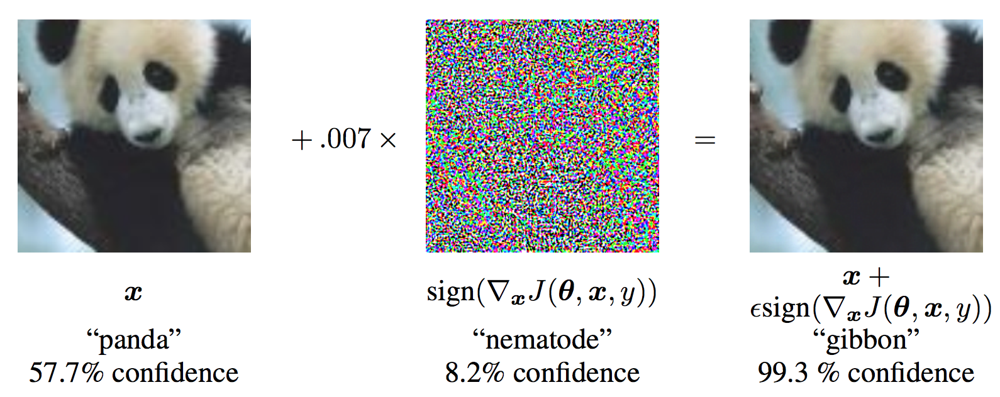
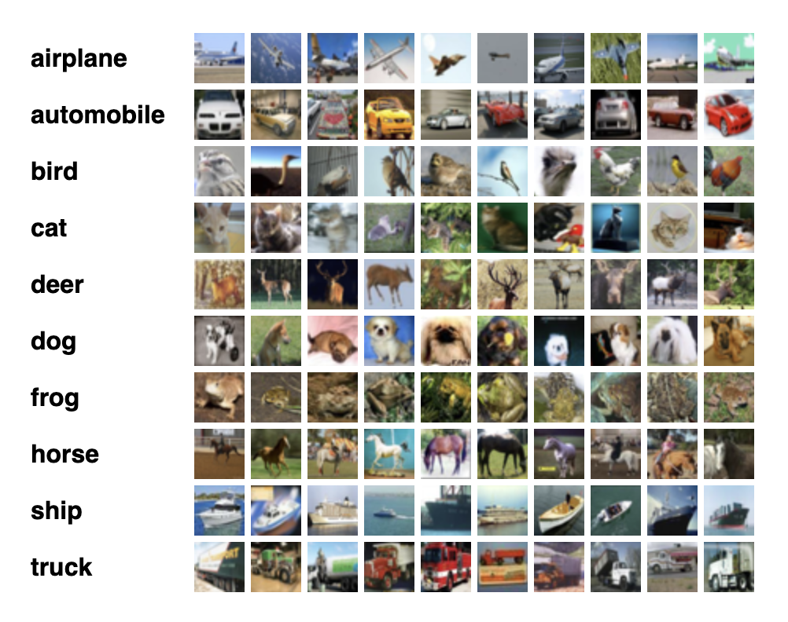

Welcome to
An interactive adversarial attack visualization tool brought to you by

Brought to you by
In 2014, Goodfellow et al. showed that an adversarial image of a panda could fool a Machine Learning model into outputting "Gibbon," leading to the birth of the research in Adversarial Machine Learning. An adversarial attack produces adversarial examples that are crafted with small, indistinguishable perturbations with the goal to result in model prediction errors, e.g. image misclassifications.
There are several types of known adversarial attacks, two of which are white-box and black-box attacks. A white-box attack assumes that the attacker has full knowledge and access to the internal logic of the model (architecture, gradient information, etc.), while a black-box attack assumes that the attacker only has access to the inputs and outputs of the model. Alternatively, the attacks can also be divided into targeted attacks and non-targeted attack. A non-targeted attacks indicates that the goal of the adversary is to produce a wrong output but does not care what the new prediction is, while in the case of a targeted attack the input data is specifically altered to produce the prediction of a target class.
The Fast Gradient Sign Method (FGSM) attack is one of the first and most well-known adversarial attacks to date. The FGSM attack is a gradient-based white-box attack that is simple in logic but has proven to be highly effective. The attack adjusts the input image by taking a step toward the sign of the back-propagated gradients. The idea is that rather than working to minimize the loss by adjusting the weights based on the gradients, the FGSM attack adjusts the input data to maximize the loss.
For our web application, we choose to visualize the FGSM attack (with l_infinity norm) due to it being the most well-known adversarial attack and its straightforward attack methodology.
For our visualization, we choose to use the CIFAR-10 dataset. The CIFAR-10 dataset consists of 60,000 coloured images in 10 classes, with 6,000 images per class. For visualizability, we randomly sample 10 images from each class (with a total of 100 images) for our visualization.
Since FGSM is a gradient-based white-box attack, the set of adversarial examples generated will differ depending on the specific model being attacked. To demonstrate the impacts of the FGSM attack on different models, we have included visualizations of two specific models side by side. For our design, we have decided to use readily available models that were pre-trained on the CIFAR-10 training dataset. Specifically, we select VGG16_BN (VGG-16 with batch normalization) and VGG19_BN (VGG-19 with batch normalization) for our demonstration.
The VGG-Network architecture is a convolution neural network first proposed by Simonyan and Zisserman; compared to previous derivatives of AlexNet, the VGG-Network investigates the effects of convolutional network depth on its accuracy in a large-scale image recognition setting. The original study has demonstrated that using networks of increasing depth and an architecture with very small (3x3) convolution filters results in a significant improvement over the prior-art configurations by pushing the depth to 16-19 weight layers.
The data projector consists of the image dataset CIFAR-10 being projected as circles on a 2-D plane. Each circle represents an instance from the dataset. For our visualization, we apply the dimensionality reduction method t-SNE on the extracted features (representations) of each input image by the VGG models.
The inner colour of each circle represents its ground truth label, and the outer colour (if exists any) represents the class of the instance the model predicts it as. Hovering each circle will provide you with some quick information regarding the instance number, its ground truth label, and the model's current prediction class.
The Instance-Level Attack Explainer provides more in-depth information regarding each instance in the dataset. Clicking on each circle in the data projector will update the Instance-Level Attack Explainer accordingly to display the original image, the perturbed image, and the noise visualized as an image. An animation sequence is also played on loop to demonstrate the general flow of the attack methodology.
Additionally, we provide an interactive confidence level bar chart that displays the model's confidence scores across all ten classes before and after the attack. Hovering each pair of bars will highlight the difference in percentage before and after the attack.
You may adjust the slider horizontally to choose the perturbation of interest. After a perturbation size has been selected, you may click on the attack button below the perturbation slider to initiate the corresponding animated sequence that simulates the attack.
The bar charts (robustness analyzer) above the perturbation slider visualize the prediction accuracy of the VGG models before and after an adversarial attack. The natural accuracy stands for the model's prediction accuracy on the unperturbed CIFAR-10 dataset. The robust accuracy stands for the model’s performance on the corresponding adversarial dataset.
The CIFAR-10 Dataset
Pytorch Adversarial Example Generation
Explaining and Harnessing Adversarial Examples (Goodfellow et al.)
Very Deep Convolutional Networks for Large-Scale Image Recognition (Simonyan et Zisserman)
Welcome to
An interactive adversarial attack visualization tool brought to you by